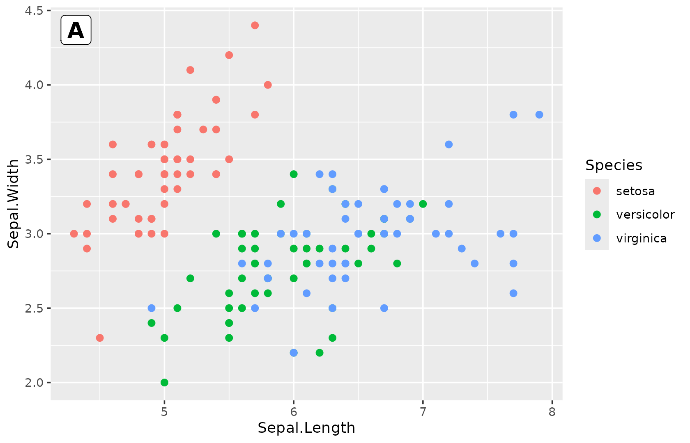
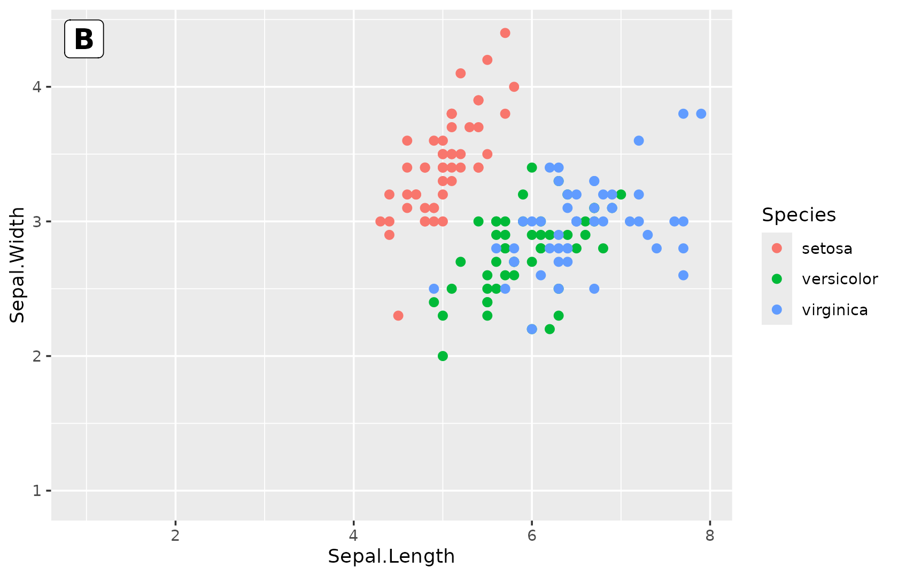
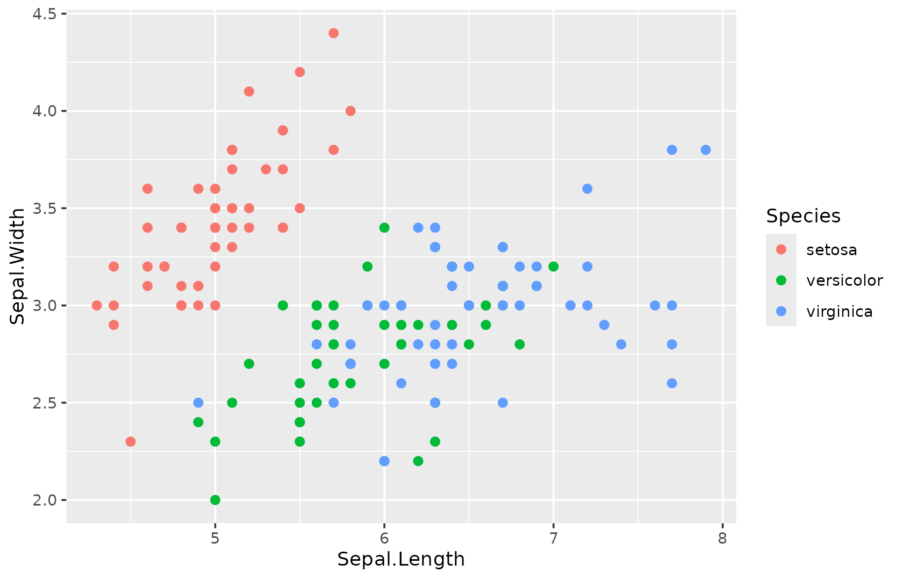
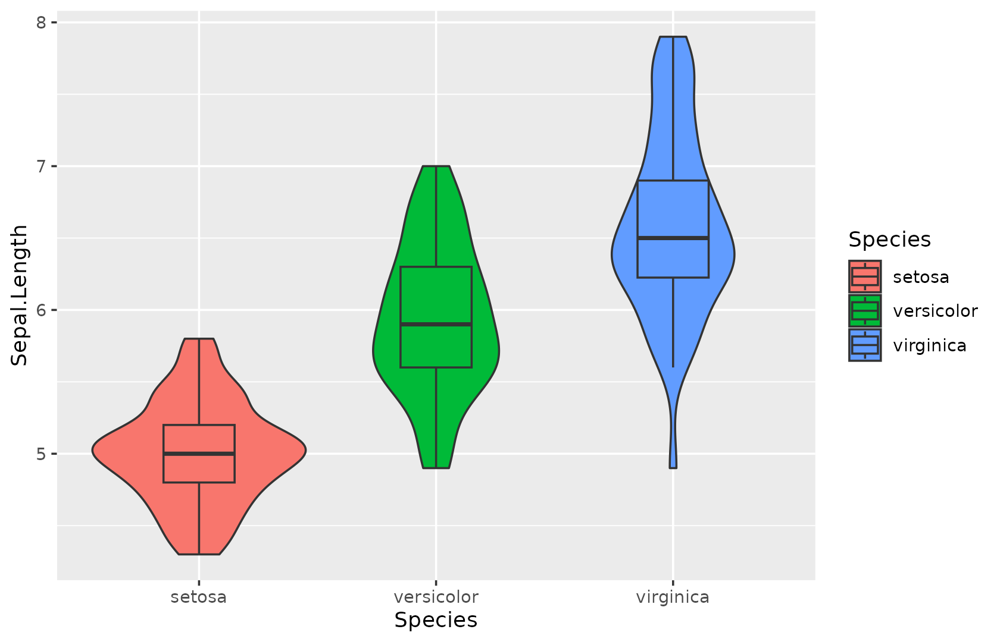

ggplot2 Formatting: fmt_* and Themes
Source:vignettes/ggplot2_formatting.Rmd
ggplot2_formatting.RmdBase Plot
All examples build on this base plot:
p <- ggplot(iris, aes(Sepal.Length, Sepal.Width, color = Species)) +
geom_point(size = 2)
p
fmt_plot() — Master Chaining
Chain multiple formatting operations in one call:
p |> fmt_plot(
legend.position = "bottom",
tag = "A",
base_size = 14
)
fmt_tag() — Panel Labels
p |> fmt_tag("A")
p |> fmt_tag("B", x = 0.95, y = 0.95, size = 16)

fmt_ref() — Reference Lines
p |> fmt_ref(xintercept = 5.8, yintercept = 3.0)
# Multiple lines with colours
p |> fmt_ref(xintercept = c(5, 6, 7), color = c("red", "blue", "green"))

fmt_strip() — Facet Strip Colours
p_facet <- ggplot(iris, aes(Sepal.Length, Sepal.Width)) +
geom_point() +
facet_wrap(~Species)
p_facet |> fmt_strip(label_fill = c("#E41A1C", "#377EB8", "#4DAF4A"))
fmt_boxplot() — Overlay Boxplot
p_violin <- ggplot(iris, aes(Species, Sepal.Length, fill = Species)) +
geom_violin()
p_violin |> fmt_boxplot()
flatten_patchwork() — Flatten Nested Patchwork
library(patchwork)
nested <- (p1 | p2) / (p3 | p4)
flat <- flatten_patchwork(nested)Recursively flattens nested patchwork objects into a single-level list.